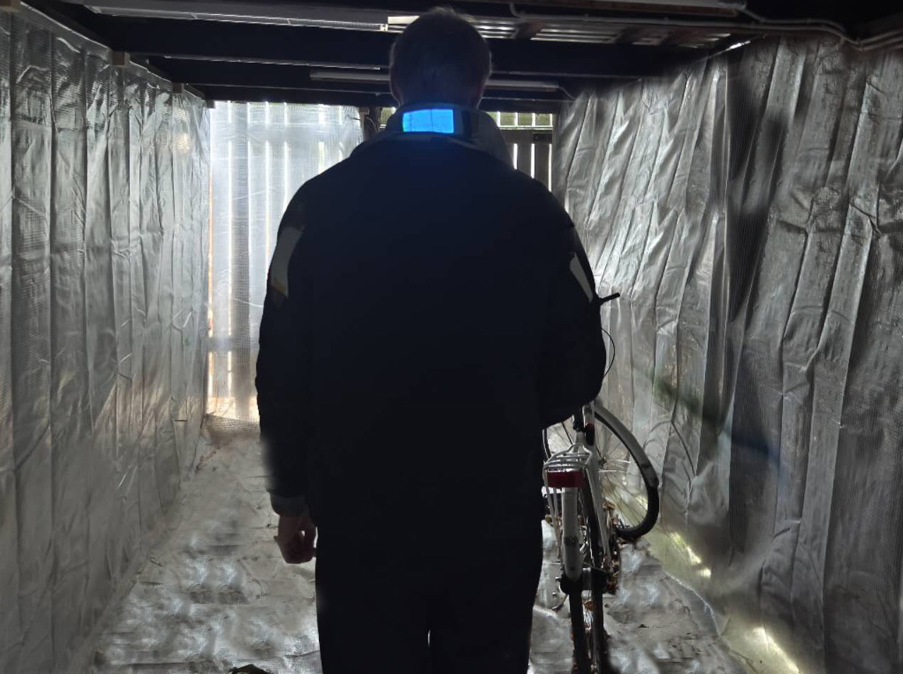
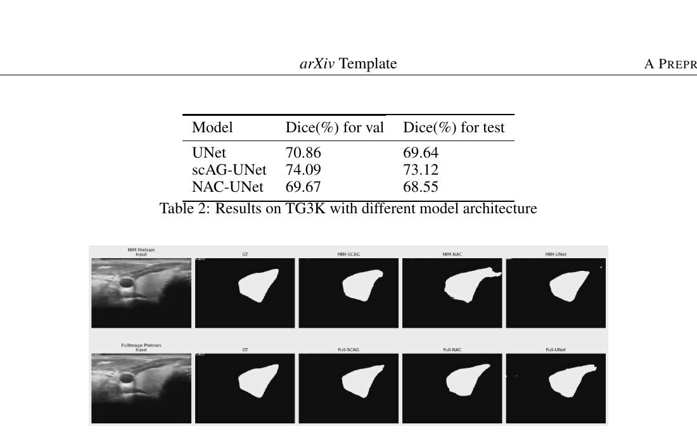

Research
Projects across adaptive XR, AI systems, perception, and interactive hardware. Ongoing work is labelled as ongoing; coursework is labelled as coursework.

Toward Adaptive VR for Relaxation: Exploring Multimodal Sensing and User-State Prediction
A thesis on controllable visual motion, multimodal recordings, and the limits of calibration-free response estimation in VR relaxation.
Completed MSc thesis
Supervised by Peng Yuan Zhou · Ken Pfeuffer

Heart-Rate-Adaptive Virtual Reality Exposure Therapy
A prototype exploring how heart-rate changes could inform exposure intensity while keeping pacing, pause, and exit in the participant’s hands.
Prototype · not a clinical efficacy claim
Supervised by Peng Yuan Zhou

3D Structure–Rotation Pairing (SRP) Task
A compact XR pilot for measuring behavioral, physiological, transition, and sensor-quality responses under controlled 3D similarity and rotation conditions.
Pilot protocol · results pending
Supervised by Peng Yuan Zhou

Whispers of Dreams: A Human–AI Dream Companion
A three-phase AI experience for emotional conversation, context-aware dream interpretation, and personalized visual storytelling.
Course project · exploratory prototype
Supervised by Niklas Elmqvist
Linki: An Adaptive Agentic RAG System
An independent AI system exploring adaptive retrieval and agent routing for more reliable question answering.
Independent project
Self-directed

Uicycle: EL-Display Jacket for Safer Cycling
A team prototype combining an EL-display jacket, bicycle-mounted sensors, and embedded control to make cyclist actions more visible at night.
Team/course project
Supervised by Michael Wessely

Linki-Agent-I: A Terminal Multi-Agent Coding Assistant
A Python terminal assistant that plans natural-language tasks, delegates research and implementation, executes inside a scoped workspace, and verifies the result.
Open-source systems prototype
Self-directed
Distilling GPT-4 Preferences for Summarization
A preference-aligned Reddit TL;DR pipeline that calibrates ROUGE-L, BERTScore, and factuality signals before training with Direct Preference Optimization.
Coursework report · PDF available
Supervised by Akhil Arora

Masked Pretraining for Medical Image Segmentation
A U-Net-based framework comparing masked reconstruction and model variants for limited-label thyroid ultrasound and panoramic dental X-ray segmentation.
Course project · source repository
Supervised by Henrik Pedersen
Additional work
Smaller course projects, teaching material, and work that is not yet ready for a full case study can be found in my CV. The research list will grow as studies reach a publishable or presentable stage.
View academic background